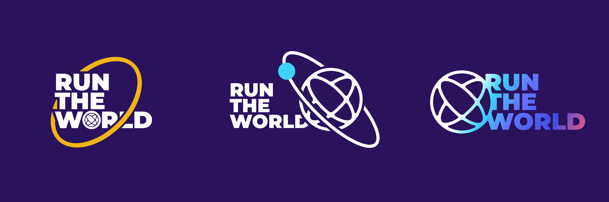
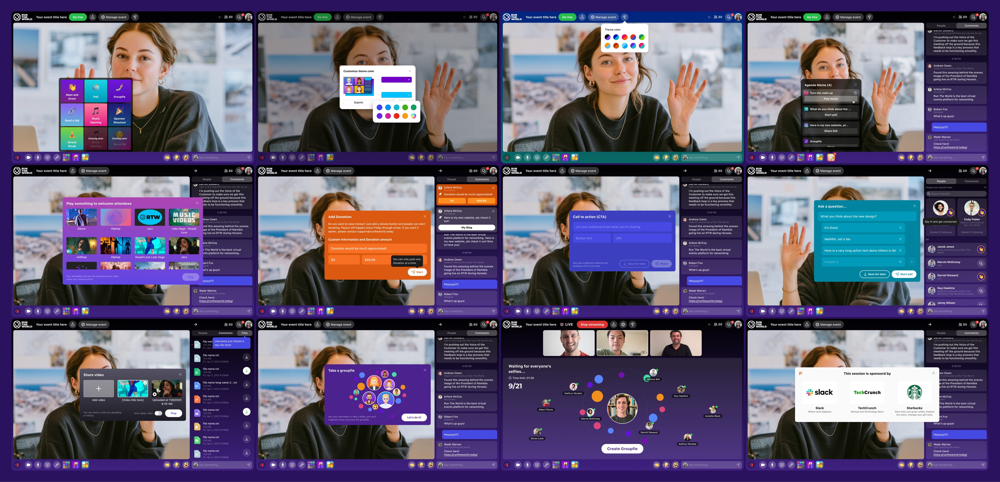
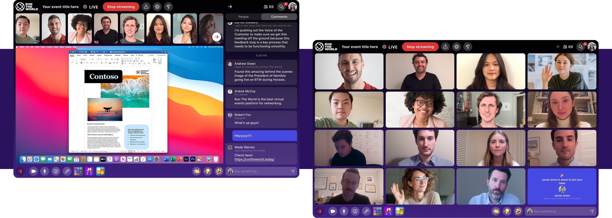
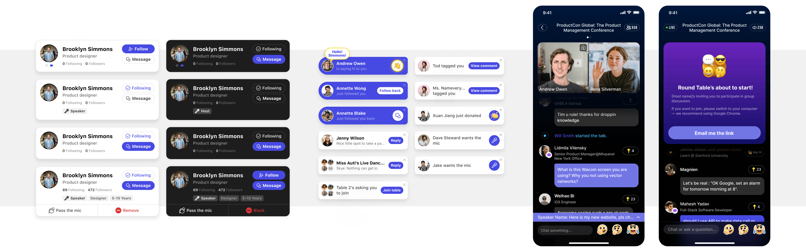
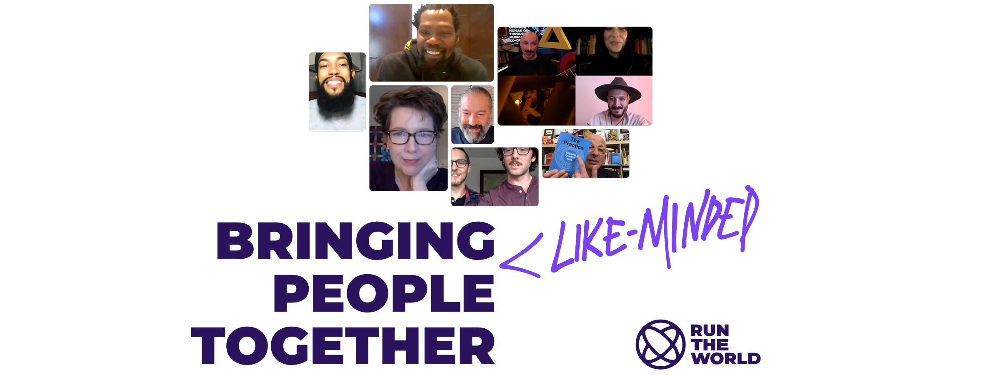

Loading...
Loading...

Role: Core Product Manager & UX Design Lead
Company: Run The World (RTW), Silicon Valley-based startup founded in 2019
Funding: Backed by Andreessen Horowitz (a16z), Founders Fund, Dreamers VC, Hartbeat Capital
Run The World (RTW) is a virtual event platform designed to facilitate interactive online experiences that build social relationships and communities. During the COVID-19 pandemic, RTW gained significant traction, hosting over 50,000 virtual events globally, including notable clients like Forbes, Meta, Amazon, United Nations Development Programme, and Harvard University.
As a core product manager and UX design lead, I collaborated with a team of seasoned professionals from companies like Facebook, Google, Twitter, Instagram, Uber, and Tesla. Our goal was to innovate the virtual event space by introducing features that mimic real-life social interactions.
Key Innovations
Cocktail Party:
A feature enabling random 1:1 networking sessions, simulating the spontaneity of real-world social events.
Round Table:
Allows hosts to divide attendees into small groups for focused discussions, enhancing engagement and collaboration.
MagicBox:
An interactive tool within the chat interface offering features like Groupfie, emoji reactions, tipping, polls, and more to enrich the event experience.
Design Approach
We adopted a Use Case - Goal - Solution - Feedback methodology to ensure our designs met user needs effectively. This approach facilitated rapid iteration and refinement, especially crucial in a remote work environment.
In addition to UX design, I was responsible for defining RTW's brand identity and visual guidelines. Emphasizing a social-first approach, we ensured consistency across desktop and mobile platforms, providing users with a seamless experience regardless of device.
Impact
RTW's innovative features set new standards in the virtual event industry, influencing competitors and shaping user expectations. Our platform not only supported large-scale conferences but also enabled intimate gatherings, such as fan meetups and AMA sessions, fostering genuine connections across geographical boundaries.
Through strategic design and a focus on user engagement, RTW transformed virtual events into dynamic, interactive experiences, bridging the gap between physical and digital interactions.
